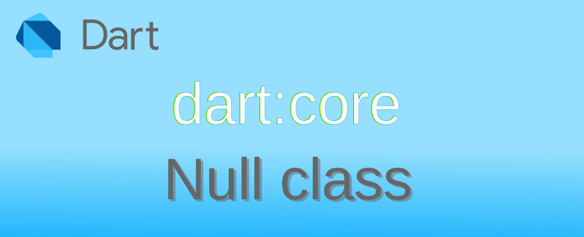

Dart: การใช้งาน null เบื้องต้น

ค่า null ที่ใช้ใน Dart เป็นค่าจาก Null class ซึ่ง class นี้จะพิเศษกว่า class อื่น ๆ คือ มันไม่ได้ implement Object class เหมือน class อื่น ๆ และเป็นค่าที่พิเศษตรงที่ตัวแปรที่ไม่ได้ทำการเก็บค่า Instance จะเริ่มต้นเป็นค่า null เสมอ และถ้าหากไปเรียกใช้โดยที่ยังเป็นค่า null ก็จะเกิด Exception error ได้
DateTime? myBirthday;
print(myBirthday); // output → null
print(myBirthday!.add(Duration(days: 1))); // exception error → Null check operator used on a `null` value
null ถือว่าเป็นค่าที่ทำให้เกิดความปั่นป่วนในโลกคอมพิวเตอร์ OOP เป็นอย่างมาก เนื่องจากหากผู้เขียนโปรแกรมลืมตรวจสอบค่าตัวแปรว่าเป็น null หรือไม่ และเข้าถึงตัวแปรดังกล่าว ก็จะทำให้แอปหยุดทำงาน เกิด NullPointerException error และในยุคเริ่มต้นของภาษา OOP เช่น Java C++ ต่างก็ไม่มีวิธีในการตรวจสอบค่า null ที่ผู้เขียนโปรแกรมลืมกำหนดค่า Instance ของ Object ที่จะใช้งาน แต่ภาษายุคใหม่ ๆ ได้ทำการแก้ไขปัญหาแล้ว รวมถึง Dart 3.0 ที่บังคับใช้ความปลอดภัยกับค่า null แบบเต็มรูปแบบ
- ค่าปริยายเริ่มต้นไม่เป็น
null - ตรวจสอบการใช้งานว่าต้องไม่เป็น
nullผ่านตัว compiler optimizations
สำหรับข้อ 2 นั้น ตัว compiler จะพยายามแจ้งเตือนผู้เขียนโปรแกรมว่าอาจมีจุดไหนบ้างที่อาจไปเรียกใช้งาน null โดยไม่ตั้งใจ และให้เขียนคำสั่งตรวจสอบเพิ่มเติมก่อนใช้งาน ถึงแม้จะไม่สามารถแก้ไขปัญหาได้ 100% แต่ก็แก้ไข bugs ที่เกิดจากความไม่ตั้งใจได้เยอะมาก
การกำหนดค่าเริ่มต้น null
ใน Dart การประกาศ type annotation จะเป็นแบบ non-null คือเก็บค่า null ไม่ได้ ยกเว้นว่าผู้เขียนโปรแกรมจะระบุว่าต้องการเก็บค่า null ด้วย โดยการใส่เครื่องหมาย ? ต่อท้าย
DateTime? nullDate; // nullDate can contain `null` value
print(nullDate); // output → null
// comiler error: The method 'toLocal' can't be unconditionally invoked because the receiver can be 'null'.
print(nullDate.toLocal());
DateTime myBirthday; // myBirthday can't contain `null` value
// compiler error: Error: Non-nullable variable 'myBirthday' must be assigned before it can be used.
print(myBirthday);
จากตัวอย่าง หากพยายามจะใช้งานตัวแปรที่ยังเป็น null เพราะในโปรแกรมไม่มีคำสั่งสร้าง Instance ของ DateTime class ให้กับตัวแปร nullDate จะทำให้ compile error ส่วนตัวแปรรที่ผูู้ใช้งานประกาศ type annotation โดยไม่ใส่ ? ต่อท้าย ตัว compiler จะแจ้งปัญหาก่อนที่จะใช้งานตัวแปรว่าไม่มีการกำหนดค่าก่อนใช้งาน
DateTime? nullDate; // nullDate can contain `null` value
print(nullDate); // output → null
nullDate = DateTime(2024);
print(nullDate.toLocal());
nullDate = null;
if(nullDate != null) {
print(nullDate.toLocal());
}
จากตัวอย่าง หากตัวแปรถูกกำหนดค่า null ตัว compiler จะแจ้งปัญหาว่ามีการใช้งาน null แต่หากมีการเขียนตรวจสอบค่า null ก่อน ก็จะปล่อยให้ run ได้เพราะเห็นว่ามีการตรวจสอบและไม่ได้ใช้งาน null แล้ว
การเปรียบเทียบค่า null
เนื่องจากค่า null เป็น instance จาก Null class ดังนั้น ค่า null ทุกที่จะมาจาก instance เดียวกัน สามารถใช้ == และ != ในการตรวจสอบได้
DateTime? getBirthDay() {
return null;
}
void main() {
DateTime? nullDate; // nullDate can contain `null` value
nullDate = getBirthDay();
if (nullDate == null) {
print("nullDate is null");
} else {
print(nullDate);
}
}
การใช้งาน null-aware operator
Dart มี operator หลายตัวที่ช่วยจัดการเรื่องการตรวจสอบค่า null ทำให้การเขียนโปรแกรมสั้นลง และอ่านได้รวดเร็วยิ่งขึ้น
คืนค่าทางขวามือถ้าทางซ้ายเป็น null ด้วย ??
ทำงานเหมือน ?: แต่ย่อรูปให้ลดลง ใช้ตรวจสอบค่าของตัวแปรว่าเป็น null หรือไม่ ถ้าไม่ใช่ null จะคืนค่าตัวมันเองกลับไป แต่ถ้าเป็น null จะคืนค่าที่อยู่ทางขวาให้
int? getX() {
return null;
}
void main() {
int? x = getX();
int y = x ?? 0;
int z = (x != null) ? x : 0; // same as ??
print(y); // output → 0
print(z); // output → 0
}
หากตัวแปรมีค่าเป็น null ให้กำหนดค่าใหม่เป็นค่าทางขวาแทน ด้วย ??=
ใช้ตรวจสอบค่าของตัวแปรว่าเป็น null หรือไม่ ถ้าเป็น null จะกำหนดค่าใหม่ที่อยู่ทางขวาแทน
int? getX() {
return null;
}
void main() {
int? x = getX();
x ??= 0;
x = x ?? 0; // same as ??=
x = (x != null) ? x : 0; // same as ??=
print(x);
}
null-aware methods ด้วย ?.
?. ใช้ตรวจสอบว่า object ที่จะใช้คำสั่ง properties หรือ methods เป็นค่า null หรือไม่
- ถ้าไม่เป็นค่า
nullจะทำการเรียกใช้ properties หรือ methods ตามปกติ - ถ้าเป็น
nullจะไม่มีการเรียกคำสั่ง properties หรือ methods ดังกล่าว และคืนค่าnullกลับไป
List? getList() {
return null;
}
void main() {
List? myList = getList();
myList?.add(0); // do nothing because myList == null
if (myList != null) { // same as ?.
myList.add(0);
}
}
null-aware spreads สำหรับตรวจสอบ List ที่ใช้จะ spreads ว่าเป็น null หรือไม่ด้วย ...?
การใช้ ... สำหรับแตก List ใน List อื่น หากต้องการทดสอบว่า List ที่จะแตกเป็น null หรือไม่ ให้เพิ่ม ? ต่อท้าย ... หาก List เป็น null ก็จะข้ามไป
List? x, y = [1, 2, 3];
// compile error → A nullable expression can't be used in a spread.
List z = [...x, ...y];
// use null-aware spreads
List ok = [...?x, ...?y];
print(ok); // output → [1, 2, 3]
การข้ามการตรวจสอบ null ด้วย !. (Casting away nullability)
!. ใช้สำหรับยืนยันว่า ตัวแปรไม่มีค่าเป็น null แน่ ๆ (Casting away nullability) เป็นการบอก compiler ให้ข้ามการตรวจสอบ null ไป การใช้ !. ต้องเข้าใจว่าเป็นการยืนยันของผู้เขียนโปรแกรมเท่านั้น แต่หากสุดท้ายมันมีค่าเป็น null ก็จะอาจเกิด Exception error หรือกลายเป็น bugs ในแอปก็ได้
List? getList() {
return null;
}
void main() {
List? myList = getList();
myList!.add(0); // ignore `null` test, compile pass but runtime error
}
ในการใช้งานทั่วไป !. จะถูกใช้บ่อยในการอ้างถึง key ใน Map เพราะว่ามันสามารถคืนค่า null กลับมาได้หาก key นั้นไม่มีใน Map
Map<String, String> test = {'a': 'Ant', 'b': 'Boy'};
// compile error → The method 'toUpperCase' can't be unconditionally invoked because the receiver can be 'null'
print(test['a'].toUpperCase());
// I'm sure key 'a' exists.
print(test['a']!.toUpperCase()); // output → ANT
// I'm sure key 'c' exists, but I was wrong
print(test['c']!.toUpperCase()); // exception error → Null check operator used on a `null` value

เนื่องจากข้อจำกัดของ compiler ในบางครั้งถึงเขียนคำสั่งตรวจค่า null ไปแล้ว แต่โปรแกรมอาจมีรูปแบบซับซ้อนจนตัว compiler ไม่สามารถตรวจสอบได้ เพื่อข้ามข้อจำกัดดังกล่าวจึงจำเป็นต้องมี !. ไว้บอก compiler ว่าสามารถข้ามไปได้ โปรดใช้ !. อย่างระมัดระวัง
ใครเป็นคนคิดค้นค่า null
คนที่ออกแบบให้มีการใช้ null เพื่อใช้บอกถึงตัวแปรที่ไม่มีการอ้างไปที่ Instance ใด ๆ คือ Sir Charles Antony Richard Hoare โดยในปี ค.ศ.2009 เขาได้ไปพูดในงาน software conference และได้ขอโทษที่การออกแบบของเขา ทำให้เกิดความเสียหายระดับพันล้านดอลลาร์ จากการที่เขาได้ออกแบบในภาษา ALGOL W ให้ใช้ Null และมีการนำเอา Null มาใช้หลังจากนั้นในภาษาอื่น ๆ เรื่อยมา ซึ่งความเสียหายที่เกิดขึ้น ก็น่าจะเป็นปัญหาที่แอปหยุดทำงานเพราะ NullPointerException ที่หลุดจากการตรวจสอบของผู้พัฒนาโปรแกรม รวมถึงต้องเสียเวลามาแก้ไขปัญหาที่เกิดขึ้น การเขียนโปรแกรมที่ต้องมาคอยเขียนคำสั่งตรวจสอบ Null จำนวนมาก
ส่วนตัวคิดว่าปัญหาจริง ๆ มันน่าจะมาจากการจัดการค่า null ในโปรแกรมที่เขียนขึ้นเป็นหน้าที่ของคนเขียนโปรแกรม แทนที่จะเป็นตัว compiler ที่จะช่วยเหลือตรงนี้ เพราะยิ่งโปรแกรมมีความซับซ้อนมากขึ้น จำนวนการสร้าง class มากขึ้น มันยากมากที่จะให้คนเขียนโปรแกรมจัดการเรื่องตรวจสอบ null ก่อนใช้ได้ครบทุกจุด (คิดดูว่าต้องมีคำสั่ง if เพิ่มขึ้นเยอะแค่ไหน) และการออกแบบภาษาโปรแกรมที่ไม่สามารถระบุเป็น non-null ได้นั้นเอง